Sakura Card Captors - O jogo
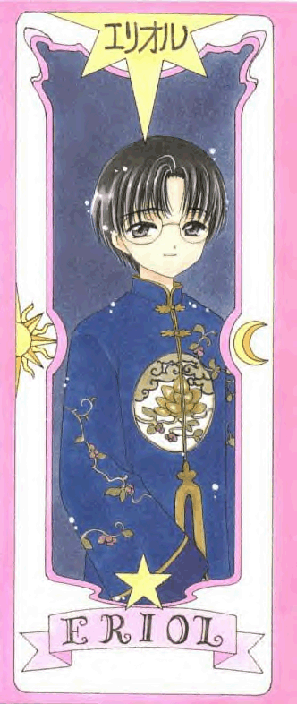
Eriol é a reencarnação de qual mago?
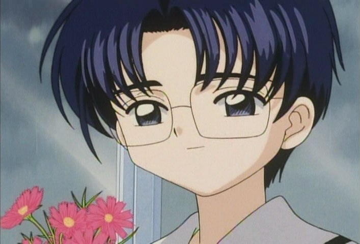
Merlin
Clow Reed
Hew Draper
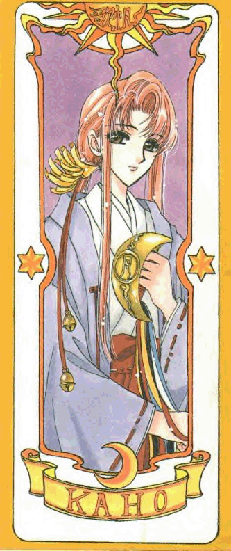
Kaho Mizuki é misteriosa e enigmática, porém ela ajuda com algo muito importante.
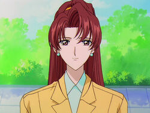
O que ela tem?
O sino místico
Um amuleto mágico
O poder de ressureição
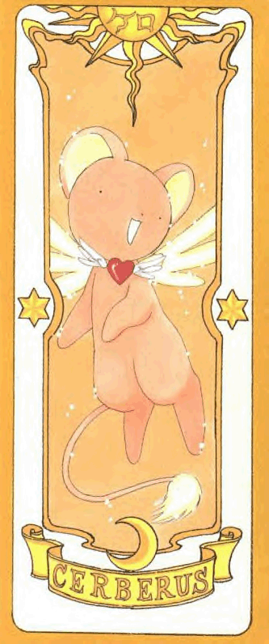
Qual é o apelido dado por Sakura para o guardião do livro Clow?
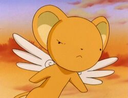
Ursinho
Cerbis
Kero
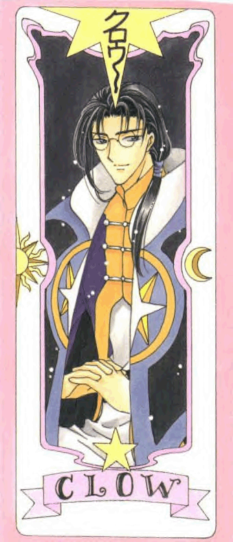
Clow Reed é um mago muito poderoso.
O que ele criou?
Clow Cards
Livro do Clow
Calderão do Poder
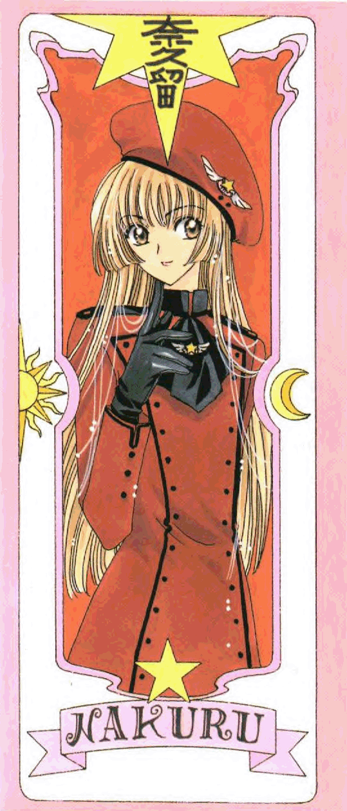
Qual é o verdadeiro nome de Nakuru Akizuki?
Diamond Magical
Ruby Moon
Cristal Star
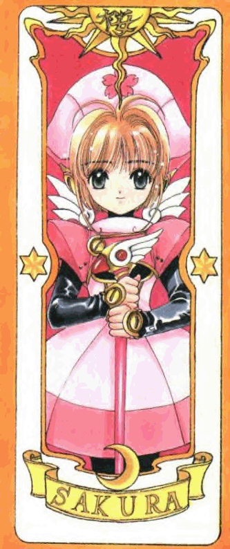
Sakura sempre mostra o quanto temos que sermos fortes diante as dificuldades.
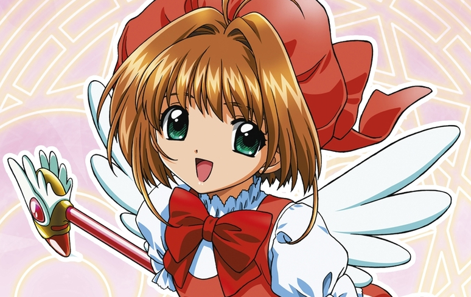
Qual é o seu principal bordão?
"Tudo vai ficar bem"
"Força, Foco e Fé"
"Vá sempre adiante"
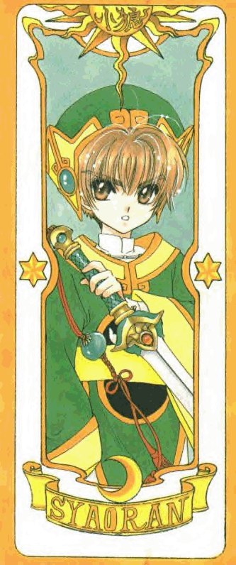
Syaoran Li era representado como ...
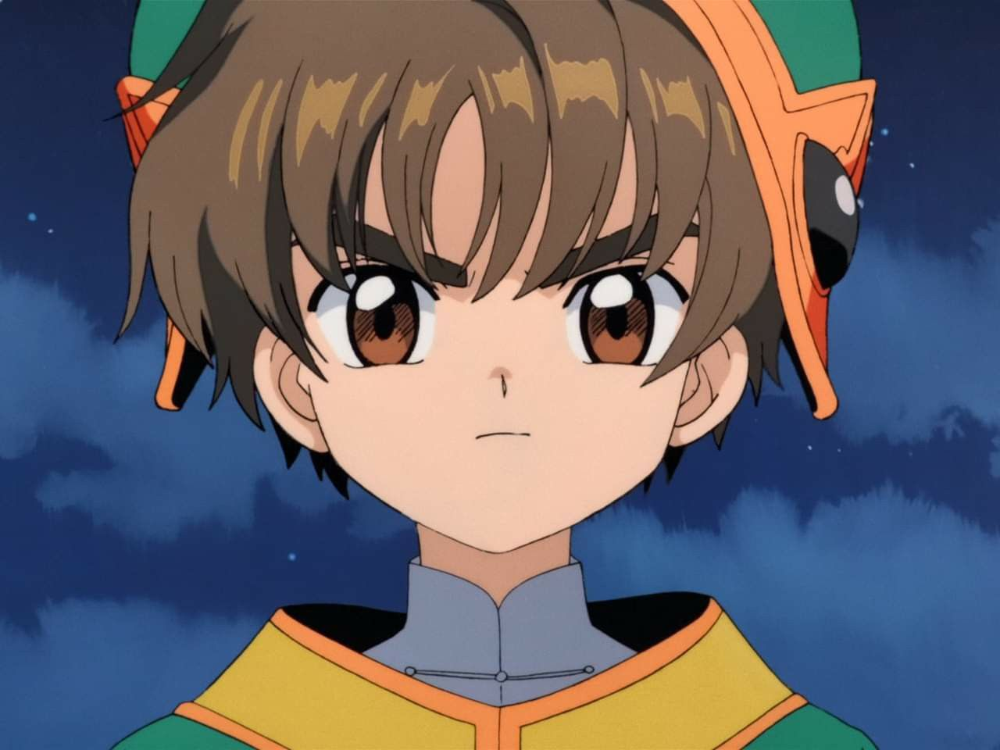
Irmão mais novo
O aprendiz do mago
O rival de Sakura
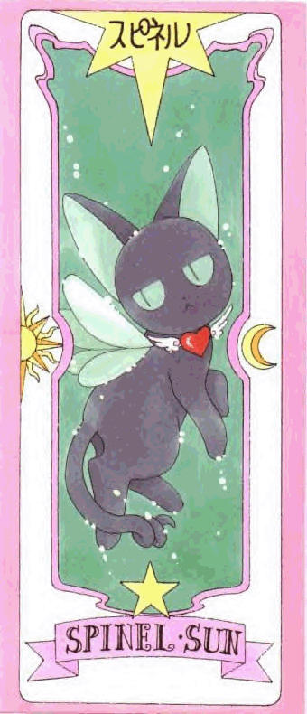
Qual é a maior fraqueza de Spinel?
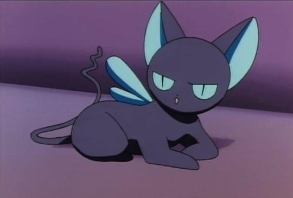
Salgados
Doces
Leite
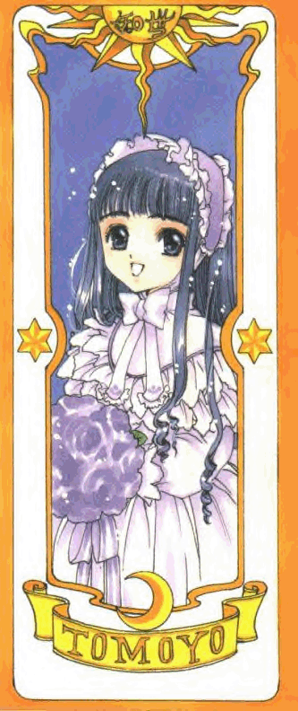
Tomoyo, uma das melhores amigas de Sakura, adora fazer o quê?
Filmagens
Tocar piano
Cantar
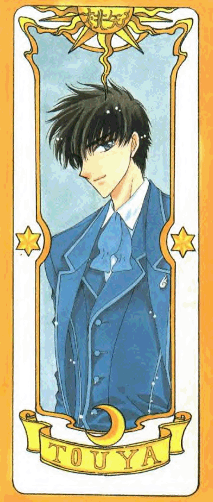
Touya Kinomoto é o que da Sakura?
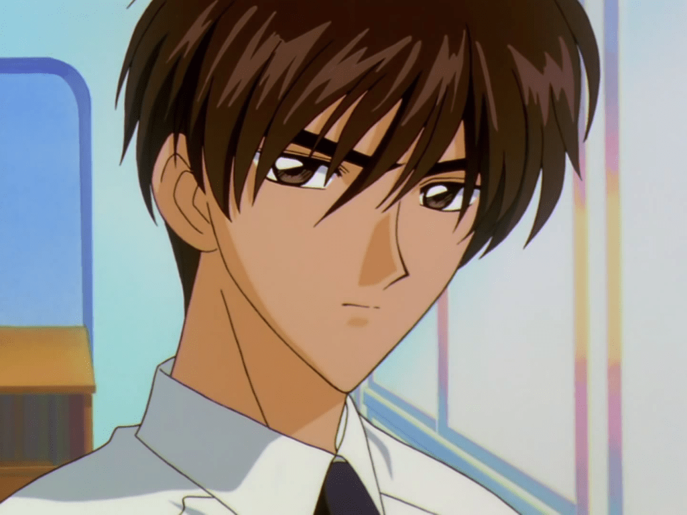
Amigo
Irmão
Primo
Enviar Resposta
Pontuação: